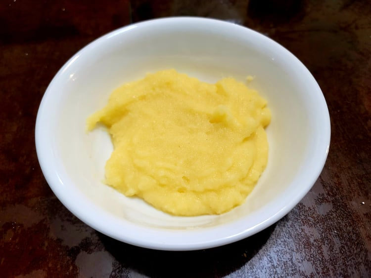

Cornmeal Mush

Ingredients:
- 1 cup Cornmeal
- 4 cups Water
- Salt, to taste
Instructions:
- Add the cornmeal and water to a medium saucepan. Heat over medium while whisking constantly until it comes to a simmer, about 5 minutes. Reduce the heat to low and let simmer for 30-45 minutes, whisking occasionally, until it reaches the desired thickness.
- Once it is the desired thickness, remove from heat. Whisk in salt to taste.